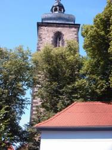
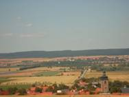
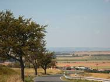
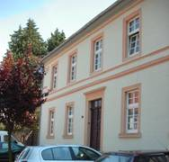

|
|
|
  Blick auf Wiehe 
Kirchturm von Wiehe
Pfarramt Wiehe |
Durch archäologische Funde ist die Besiedlung unseres Gebietes seit der Jungsteinzeit bezeugt. Mit Sicherheit waren auch Vertreter germanischer Stämme zu Beginn der Zeitrechnung und danach Bewohner des Thüringer Königreiches hier ansässig. Die erste urkundliche Erwähnung erfolgte um 786 im "Breviarium Lulli", einem Güterverzeichnis des Klosters Hersfeld. 933 erwirbt König Heinrich I. Wiehe. Die Burg wird Reichsburg. Wiehe ist Hauptort der "Provincia Uuigsezi", des Wiehegaus. 998 kommt Wiehe mit umliegenden Dörfern und Weinbergen durch Kaiser Otto III. an das Kloster Memleben. Damit ist der 1000jährige Weinanbau in unserer Region urkundlich belegt. Um 1045 kommt die Herrschaft Wiehe als Lehen an die Thüringer Grafen von Kevernburg. Graf Albert lässt 1233/37 die Burg Rabenswald erbauen, die jedoch bald (1342/46) im Thüringer Grafenkrieg zerstört wird. Nach wiederholtem Besitzerwechsel gelangt Wiehe 1461 erblich an die Familie von Werthern. Der sich im Mittelalter zur Stadt entwickelnde Ort war ummauert und besaß bereits 1320 Elemente des Stadt- und Marktrechts. Nach dem Großbrand 1659 wurden Stadt, Kirche und Schloss neu aufgebaut. Wiehe hat auch nach der Gebietsreform im Freistaat Thüringen seine Eigenständigkeit und Verwaltungshoheit behalten. Die Sicherung und Sanierung des Schlosses mit Parkanlage ist eine aktuelle, kommunale Baumaßnahme der besonderen Art. Das denkmalgeschützte Schloss mit seinem reizvollem Umfeld prägt in besonderer Weise das Stadtbild und wird nach Abschluss der Sanierung das Angebot für Fremdenverkehr und Tourismus im Ort sowie in der Region zusätzlich bereichern. Ziel ist der Erhalt des Status eines staatlich anerkannten Erholungsortes in Thüringen. Wiehe hat sich ihr kleinstädtisches Gepräge trotz reicher und bewegter Geschichte über Jahrhunderte, eigentlich bis in die heutigen Tage, erhalten.
|